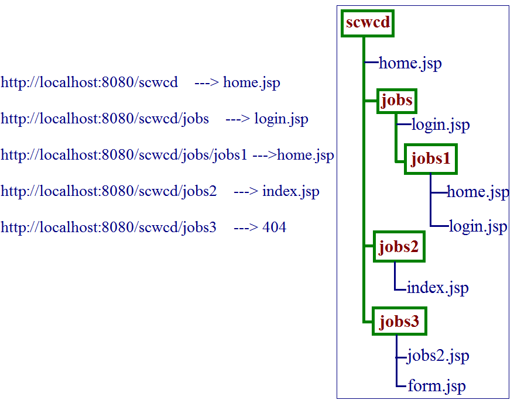
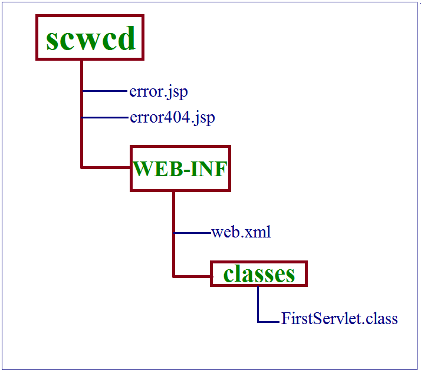
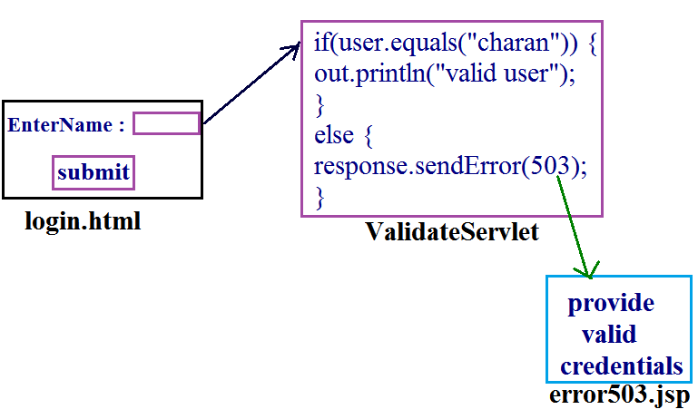
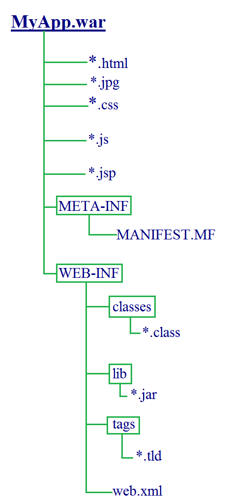

Directory Structure and Deployment of WebApplications
Agenda:
- Structure of WebApplication (or) Directory Structure
- Deployment Descriptor : (web.xml)
- WAR file
Directory Structure :
Construct File and Directory Structure of web application that may contain..
- Static content
- Jsp pages
- Servlet classes
- Deployment Descriptor(DD)
- Tag Libraries
- Jar files
- Java class files
- Servlet specification defines a standard structure for web-application. So that every server can provide that directory structure irrespective of vendor.
- Hence compulsory we should follow that particular structure only.
- All the static information we have to place with in the context root either directly or indirectly.
- All these resources present in context root are publicly accessible that is any person can access these resourses directly by its name. It is not recommended to place secured resources with in the context root directly.
- For every web application we have to maintain WEB-INF folder. All the secured resources we have to place in this folder and these resoueses are not publicly accessible.
- If any person trying to access these resources directly by their name , we will get 404 status code saying Requested Resource is not available.
- For every web-application we have to maintain one xml file , named with web.xml also known as Deployment Descriptor.
- web.xml should be placed with in WEB-INF directly.
- Web container use this web.xml to get deployment information. Hence web.xml acts as a guide to the web container.
- With in WEB-INF , we have to maintain classes folder , to place all java .class files.(Both Servlets and general java classes )
- For the required .class file web container searches in this location only. If we are placing .class files in classes folder then it is not required to set classpath explicitly.
- If we are placing any where else compulsory we should set the classpath explicitly.
- With in the WEB-INF, we have to maintain "lib" folder to place all required jar files.
- For the required .class file web container first search in classes folder and if it not available , then only web container will search in lib folder. i.e., classes present in classes folder will get more priority than lib folder classes.
- Tag library files we have to place any where with in WEB-INF either directly or indirectly.
| Resource | Location |
|---|
| Static content | with in context root either directly / indirectly |
| Jsp pages | with in context root , If it is secured then we have to place inside WEB-INF either directly / indirectly |
| Servlet classes | classes folder |
| Deployment Descriptor(web.xml) | within WEB-INF |
| Tag Libraries | any where with in WEB-INF |
| Jar files | inside lib folder |
| Java class files | inside classes |
Case 1 : Various alternative places to place Servlet class other than classes ?
- We can create jar file and place that in lib folder.
- We can place any where but that location , we have to update in classpath explicitly.
Case 2 :
- If same class present in both classes and lib folder , then which one will get priority ?
Ans: classes
Deployment Descriptor :
Objective :
- Describes the purpose , semantics and correct structure of the following deployment descriptor elements.
- error-page
- init-param
- mime-mapping
- servlet
- servlet-mapping
- servlet-class
- servlet-name
- welcome-file
- For every web application , we have to maintain one xml file named with web.xml
- It should be placed inside WEB-INF directory and it is also known as Deployment Descriptor .
- Web container will use this xml file to get web applications deployment information i.e., web.xml acts as a guide to container.
- web.xml also provides declarative mechanism for customizing web application without touching source code ( to change userName , password , Database url's ). not required to touch Servlet source code , we can perform in web.xml
Anotomy of web.xml
- <web-app>
- <description>
- <display-name>
- <context-param>
- <servlet>
- <servlet-mapping>
- <error-page>
- <welcome-file-list>
- <filter>
- <filter-mapping>
- <listener>
- <session-config>
- <jsp-config>
- <security-constraint>
- <security-role>
- <auth-constraint>
- <mime-mapping>
</web-app>
<Servlet> :
- <servlet>
- <description>
- <display-name>
- <icon>
- <servlet-name>
- <servlet-class > (or) <jsp-file>
- <init-param>
- <load-on-startup>
- <run as>
- <security-role-ref>
</servlet>
- The order of these child tags is important .
- The only mandatory tags are <servlet-name> , <servlet-class> (or) <jsp-file>
<servlet-name> :
According to servlet specification , there are 3 names for every Servlet .
- Developers name provided by programmer and specified by <servlet-class>
- Logical-name provided by deployer and specified by <servlet-name>
- End-user's name specified by <url-pattern>
<web-app>
<servlet>
<servlet-name>FirstServlet</servlet-name>
//logical name(or)developer's name
<servlet-class>MailSendingServlet</servlet-class>
//original name or proghrammer's name
</servlet>
<servlet-mapping>
<servlet-name>FirstServlet</servlet-name>
<url-pattern>/mail</url-pattern> //end-user name
</servlet-mapping>
</web-app>
The main advantages of logical-name are
- We can achieve security as we are not highlighting our internal naming convention.
- We can change our internal naming convention without effecting end-user . Hence enhancement will become easy .
- We can map different url-patterns for the same servlet .
- Within the web.xml , logical-name should be unique .
- Within the Servlet we can access its logical-name by using getServletName( ) of ServletConfig interface.
| public String getServletName( ) |
public class FirstServlet extends HttpServlet {
public void doGet(HttpServletRequest request, HttpServletResponse response)
throws ServletException, IOException {
PrintWriter out=response.getWriter();
String name=getServletName();
out.println("Logical Name : "+ name);
}
Note:
- GenericServlet implements ServletConfig , hence every method of ServletConfig is available in GenericServlet.
- As the GenericServlet contains a method , it is automatically available to our Servlet class also through inheritance .
<servlet-class> :
We can use this tag to specify original-name of the Servlet for this class only web-container performs instantiation.
Configuring Jsp in web.xml :
- Usually we can place Jsp's within the context root. In this case end-user can access directly by its name.
- But if the Jsp is secured , then it is not recommended to place in the context root directly.We have to place such type of resources inside WEB-INF and we have to provide access through <url-pattern>
- We can configure Jsp in web.xml by using <jsp-file>
<web-app>
<servlet>
<servlet-name>DemoJsp</servlet-name>
<jsp-file>/WEB-INF/date.jsp</jsp-file>
</servlet>
<servlet-mapping>
<servlet-name>DemoJsp</servlet-name>
<url-pattern>/test</url-pattern>
</servlet-mapping>
</web-app>
http://localhost:8080/scwcd/test //valid
http://localhost:8080/scwcd/WEB-INF/date.jsp //invalid 404 status code
<init-param> (Servlet initialization parameters) :
- If the value of a variable will change frequently , those values it is not recommended to hard-code inside servlet class.
- Because for every modification it requires to recompile the Servlet class, rebuild the application , redeployment & sometimes even requires server restarts also, which creates big impact to the client.
- Such type of variables we have to configure in web.xml
- By using <init-param> , to reflect the changes in web.xml , just redeployment is enough which is not costly.
<web-app>
<servlet>
<init-param> //0 to many
<param-name>User</param-name>
<param-value>scott</param-value>
</init-param>
</servlet>
</web-app>
- We can configure any number of initialization parameters but for each parameter one <init-param> .
- With in the Servlet we can access Servlet initialization parameters by using ServletConfig object.
ServletConfig interface defines the following methods
| public String getInitParameter(String name ) |
Returns the value associated with specified initialization parameters.
If the specified parameter is not available then this method returns null.| public Enumeration getInitParameterNames( ) |
If the Servlet doesn't contain any initialization parameters , then this method returns empty Enumeration object but not null.
GeneicServlet implements ServletConfig interface , hence GenericServlet provides implementation for the above 2 methods.
Demo program for displaying all Servlet Initialization parameters
<web-app>
<servlet>
<servlet-name>DemoServlet</servlet-name>
<servlet-class>InitializationParameters</servlet-class>
<init-param>
<param-name>phoneNumber</param-name>
<param-value>9912536559</param-value>
</init-param>
<init-param>
<param-name>mailId</param-name>
<param-value>arunagitha@gmail.com</param-value>
</init-param>
</servlet>
<servlet-mapping>
<servlet-name>DemoServlet</servlet-name>
<url-pattern>/test</url-pattern>
</servlet-mapping>
</web-app>
- Servlet Initialization parameters are key-value pairs , where both key & value are String objects only.
- From the Servlet , we can access these parameters but we can't modify them i.e., we have only getter methods but these are no setter methods .
- Hence these initialization parameters are considered as deployment time constants.
ServletConfig :
- For every Servlet , web-container creates one ServletConfig object.
- By using ServletConfig object Servlet can get its configuration information.
- ServletConfig interface defines the following 4 methods.
- public String getServletName( )
- public String getInitParameter(String name)
- public Enumeration getInitParameterNames( )
- public ServletContext getServletContext( )
- logical name of the Servlet , initialization parameters and reference to corresponding servletContext object.
This information is called as Servlet Configuration information.
<load-on-startup> :
- Usually Servlet class loading , Instantiation , Execution of init( ) will take place at the time of first request. It increases the response time of the first Servlet when compared with consecutive requests.
- If we are configuring <load-on-startup> , these steps will be performed at the time of either Server startup (or) at the time of application deployment.
<web-app>
<servlet>
................
................
<load-on-startup>10</load-on-startup>
</servlet>
</web-app>
- The main advantage of load-on-startup is we can maintain uniform response time for all the requests.
- The disadvantage of the tag is , creating Servlet object at the beginning may effect performance & cause memory problem.
- The Servlet whose <load-on-startup> value is less will be loaded first.
- If 2 Servlets having the same <load-on-startup> value (or) if the <load-on-startup> value is negative then we can't predict the order of loading it is vendor dependent.
<servlet-mapping> :
Which of the following url-patterns are valid ?
- /test (
 ) )
- / ()
- /test/test/*/test (
 ) )
- /test/*.jsp ()
- /*.do (or) /*.jobs ()
Web-cantainer always gives the precedence in the following order.
- Exact match
- Longestpath Prefix(Directory match)
- By Extention
- Default uri-pattern
If no other url-pattern matched then only default url-pattern will get chance
Demo program for url-pattern
1) /test ---> FS
2) /test/test/* ---> SS
3) *.do ---> TS
4) / ---> Default Servlet
http:\\localhost:8080/scwcd/test ---> FirstServlet
http:\\localhost:8080/scwcd/test/test/jobs.do ---> SecondServlet
http:\\localhost:8080/scwcd/test/jobs.do ---> ThirdServlet
http:\\localhost:8080/scwcd/jobs.do ---> ThirdServlet
http:\\localhost:8080/scwcd/jobs ---> Default Servlet
How we can configure Default Servlet in web.xml &in which cases Default Servlet will get the chance ?
With "/" we can configure Default Servlet. If no Servlet url-pattern is matching the Default Servlet will be executed.
Getting extra information from the url.
ServletRequest interface defines the following methods for this
- getRequestURI()
- getContextPath()
- getServletPath()
- getPathInfo()
- getQueryString()
Example :
public class FirstServlet extends HttpServlet {
public void doGet(HttpServletRequest request, HttpServletResponse response)
throws ServletException, IOException {
PrintWriter out=response.getWriter();
out.println("RequestURI :"+req.getRequestURI());
out.println("ContextPath :"+req.getContextPath());
out.println("ServletPath :"+req.getServletPath());
out.println("PathInfo :"+req.getPathInfo());
out.println("QueryString :"+req.getQueryString());
}
}
url-pattern : /test/test/*
-
http://localhost:8080/scwcd/test/test/jobs/software?uname=jobs&value=jbs
RequestURI : /scwcd/test/test/jobs/software
ContextPath : /scwcd
ServletPath : /test/test
PathInfo : jobs/software
QueryString : uname=jobs&value=jbs
-
http://localhost:8080/scwcd/test/test/
RequestURI : /scwcd/test/test/
ContextPath : /scwcd
ServletPath : /test/test
PathInfo : /
QueryString : null
-
http://localhost:8080/scwcd/test/test/jobs
RequestURI :
ContextPath :
ServletPath :
PathInfo : null
QueryString : null
Configuration of Welcome Pages :
- It is very difficult to remember each and every url-pattern of the webapplication for the end-user.We can reduce complexity by configuring welcome files.
- End-user has to remember only base url and whenever he is providing that url , automatically welcome page will be displayed which contains links to services from that welcome page can navigate remaining pages based on requirement.
- Hence it is highly recommended to configure welcome pages for our web-application and which makes end-users life very simple.
- We can configure welcome files in web.xml as follows
<web-app>
<welcome-file-list>
<welcome-file> home.jsp </welcome-file>
</welcome-file-list>
</web-app>
<welcome-file-list> is the direct child tag of web-app & hence we can take anywhere with in <web-app>
- For every web-application index.html Or index.jsp acts as default welcome file.
- If both index.html & index.jsp available , then index.html acts as a default welcome file .
- Whenever we are configuring welcome files explicitly , then index.html (or) index.jsp is no-longer acts as default welcome file . i.e., we are overriding default welcome file with our own welcome pages.
- We can configure welcome pages even folder wise also.
- We can configure more than one welcome files and the order is important . First matched welcome-file will be considered.
<web-app>
<welcome-file-list>
<welcome-file> home.jsp </welcome-file>
<welcome-file> login.jsp </welcome-file>
<welcome-file> index.jsp </welcome-file>
</welcome-file-list>
</web-app>

According to Servlet specification , leading '/' are not allowed for welcome files.
Ex :
<welcome-file>/home.jsp</welcome-file> //invalid
Configuring of error pages in web.xml :
- It is never recommended to display java's exception information directly to the end-user , we have to convert this raw exception information into end-user understandable form.
- We can achieve this by configuring error-pages.
- We can configure error-page either based on Exception type Or based on error code .
Configuring error page based on Exception type :
<wep-app>
<error-page>
<exception-type> java.lang.ArithmeticException </exception-type>
<location> /error.jsp </location>
</error-page>
.
.
.
</web-app>
With in the web-application any where if ArithmeticException raised then error.jsp will be displayed for the end user.
Configuring error pages based on error-code :
<web-app>
<error-page>
<error-code> 404 </error-code> //it should be either 4xx or 5xx
<location> /error.jsp </location>
</error-page>
</web-app>
FirstServlet.java
public class FirstServlet extends HttpServlet {
public void doGet(HttpServletRequest request, HttpServletResponse response)
throws ServletException, IOException {
PrintWriter out=response.getWriter();
out.println(10/0);
}
}
error.jsp
Your provided input is invalid , please provide valid input .
error404.jsp
Your requested resource is not valid , please send valid request .
web.xml
<web-app>
<error-page>
<exception-type >java.lang.ArithmeticException </exceptuion-type>
<location> /error.jsp </location>
</error-page>
<erroe-page>
<error-code >404 </error-code>
<location> /error404.jsp </location>
</error-page>
<servlet>
...........
</servlet>
<servlet-mapping>
...............
</servlet-mapping>
<web-app>
- If we are sending the request to the servlet , then error.jsp will be displayed instead of ArithmeticException.
- If we are sending the request with invalid url-pattern , then error404.jsp will be displayed instead of 404 status code

- We can send error-code programmatically , For this HttpServletResponse interface defines
| public void sendError(int statuscode) | //4xx or 5xx |
|---|
Ex:response.sendError(503);

Case 1 : We can configure error page either based on error-code or exception type , but not both simultaneously with in the same < error-page >
<error-page>
<error-code> 404 </error-code>
<exception-type>java.lang.ArithmeticException</exception-type>
<location>/error.jsp</location>
</error-page>
//not possible
Case 2 : The value of exception-type should be fully qualified name
<error-page>
<exception-type> IOException </exception-type >
//should be fully qualified name (java.io.IOException)
<location> /error.jsp </location>
</error-page>
Case 3 : The location value should starts with ' / ' , otherwise we will get deployment problems .
<error-page>
<exception-type> java.lang.ArithmeticException </exception-type>
<location> error.jsp </location > //should be starts with '/'
</error-page>
< Mime-Mapping >
WAR File : (Web-archieve)
- WAR file provides a convenient way to store the resources of web-application into a single component .
- We can deliver , transport and deploy web-application very easily if it is available in the war file form .
- Sun people provides a standard structure for the war file and every webserver provides the support for that war file.
WAR (vs) JAR (vs) EAR :
- war file (web-archieve) represents a web-application , which contains Servlets , jsps , html pages etc .
- Jar file (Java Archieve) represents a group of .class files .
- Ear file (Enterprise archieve) represents one enterprise application.
In general , Ear file considered as a group of "Wars & Jars" .
Various Commands :
To create a war file
We have to execute this command from context root .
The name of the war file will become context root of the application.
Extraction of War file : (unzip)
To display table of Contents of a war file :
Structure of WAR file :

For every web-application (war-file) , compulsary we should maintain META-INF folder. It contains the resources which are required to maintain web-application like license agrements , security filter digital certificates etc.
MANIFEST.MF :
- For every war file , compulsary we should maintain MANIFEST.MF inside META-INF
- If there is a jar file , which is common to several web-applications , then it is not recommended to place that jar file at application level . We have to place such type of jars at some common location outside of web-application and we can define its path in MANIFEST.MF by using classpath entry . Hence we can use MANIFEST.MF to define library dependencies of a web-application.
D://abc/log4j.jar
In real time with in the MANIFEST file , what are the services are exported by this application, what are the services are required maintain this web-application bundles name , bundle version name , bundle activators name etc., information placed in MANIFEST file.
Bundle-Name : myapp
Bundle-version : 1.2.0
exported-packages : com.job.secured.*;
imported-packages : org.osfd.framework.*;
------------
The resources present inside WEB-INF and META-INF are not publicly accessible. If we are trying to access these resources directly by their name we will get 404 status code. | http://localhost:8080/askapp/META-INF/MANIFEST.MF |
|---|
web.xml
<web-app>
<servlet>
<servlet-name> </servlet-name>
<servlet-class> </servlet-class>
<init-param>
<param-name> </param-name>
<param-value> </param-value>
</init-param>
<load-on-startup> </load-on-startup>
</servlet>
<servlet-mapping>
<servlet-name> </servlet-name>
<url-pattern> </url-pattern>
</servlet-mapping>
<welcome-file-list>
<welcome-file> </welcome-file>
</welcome-file-list>
<error-page>
<exception-type></exception-type>
<location> </location>
<error-code> </error-code>
</error-page>
<mime-mapping>
<extention> </extention>
<mime-type> </mime-type>
</mime-mapping>
</web-app>
|